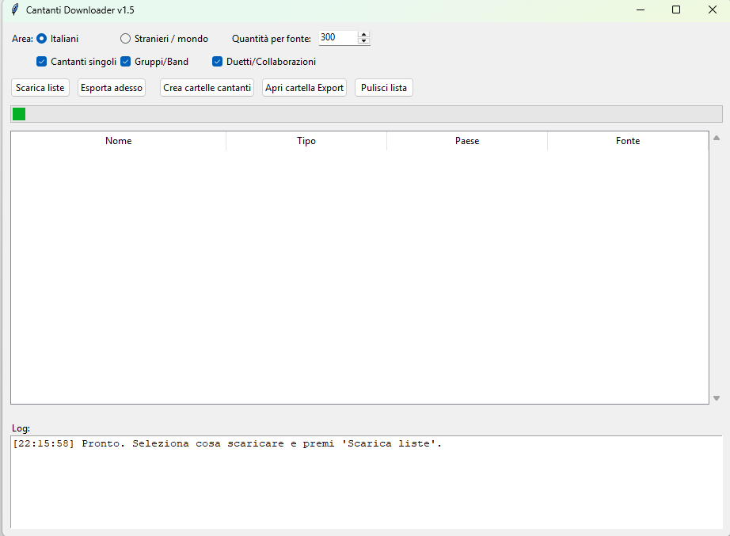

Utility 2.3.1
Catalogo Cantanti per database karaoke
La nuova utility Catalogo Cantanti permette di preparare liste di artisti italiani, stranieri, gruppi/band e duetti da importare nel catalogo ufficiale del database, migliorando il riconoscimento degli artisti.

A cosa serve
Liste artisti
Prepara e scarica liste di cantanti singoli, gruppi/band e duetti/collaborazioni.
Italia e mondo
Lavora su cataloghi italiani oppure stranieri/mondo, con quantità configurabile per fonte.
Export rapido
Esporta i nomi in file utilizzabili come base per il catalogo ufficiale del database.
Cartelle cantanti
Può aiutare a creare cartelle con i nomi degli artisti per organizzare archivi grandi.
Meno sconosciuti
Migliora il riconoscimento nel database e riduce i brani marcati come SCONOSCIUTO.
Supporto alias
Più artisti ufficiali significa riconoscimento più preciso con nomi e varianti.